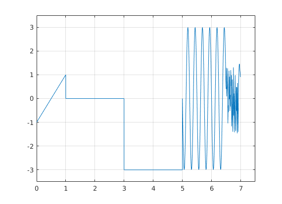

3 Laboratorijas darbs
Konstantins Glaskovs 171REB115 - REBCO4, 1.kurss
Contents
Gabalveida sign?la mont???
Sinuso?da
t_sin = 5:0.01:6.5; y_sin = A0+A*sin(2*pi*f*(t-delay)) A0 = 0; A = -3; T = (2.5-1)/6; f = 1/T; delay = 1; y_sin = A0+A*sin(2*pi*f*(t_sin-delay)); plot(t_sin,y_sin)
Line?ri main?gs sign?ls
t_saw = 0:0.01:1; y_saw = k*t(t_saw-delay) yA = 0; yB = 2; tA = 0; tB = 1; delay = 0.5; k = (yA-yB)/(tA-tB) %l?knes sl?puma koeficents delay - lai noteiktu delayr ir j?skat?s krustpunkts ar t asi (y=0) y_saw = k*(t_saw-delay); plot(t_saw,y_saw)
Konstantes sign?ls
t_const = 1:0.01:3; y_const = zeroes(1,1) - 3; y_const = ones(1,1)*3; nav korekti, ja t_const izmain?s, tad y_const nemain?sies y_const = zeros(size(t_const)); y_const = zeros(size(t_const)); plot(t_const,y_const)
Nulles signals
t_zero = 3:0.01:5; y_zero = zeros(size(t_zero)) -3;
trok??a sign?ls
t_noise = 6.5:0.01:7; y_noise = rand(size(t_noise)) * 3 - 1.5; plot(t_noise,y_noise)
Sign?lu apvieno?ana
t = [t_saw,t_const,t_zero,t_sin,t_noise]; y = [y_saw,y_const,y_zero,y_sin,y_noise]; plot(t,y) ylim([-3 3]) grid on
function y = lab3_demo_fun(t)
t = 0:0.01:7; %t_zero = 3:0.01:5; t_zerof=(t>=3)&(t<=5);t_zero = t(t_zerof); %t_sin =5:0.01:6.5; t_sinf=(t>=5)&(t<6.5);t_sin=t(t_sinf); %t_noise = 6.5:0.01:7; t_noisef=(t>=6.5)&(t<7);t_noise=t(t_noisef); %t_const = 1:0.01:3; t_constf=(t>=1)&(t<=3);t_const=t(t_constf); %t_saw = 0:0.01:1; t_sawf = (t>=0)&(t<=1);t_saw=t(t_sawf);
sinusoīda
%y_sin=A0+A*sin(2*pi*f*(t-delay)) A0=0; A=-3; T = (2.5-1)/6; f = 1/T; delay = 1; y_sin=A0+A*sin(2*pi*f*(t_sin-delay)); %plot(t_sin,y_sin)
Lineāri mainīgs signāls
k = (yA-yB)/(tA-tB) slīpuma koeficients
k = (0-2)/(0-1);
delay = 0.5;
y_saw = k*(t_saw-delay);
%plot(t_saw,y_saw)
konstantes signāls
y_const = zeros(size(t_const));
%plot(t_const,y_const)
nulles signāls
y_zero = zeros(size(t_zero))-3;
%plot(t_zero,y_zero)
trokšņa signāls
y_noise = 3*rand(size(t_noise))-1.5;
%plot(t_noise,y_noise)
signālu apvienošana
t = [t_saw,t_const,t_zero,t_sin,t_noise];
y = [y_saw,y_const,y_zero,y_sin,y_noise];
plot(t,y)
ylim([-3.5 3.5]);
xlim([0 7.5]);
grid on
ans =
Columns 1 through 7
-1.0000 -0.9800 -0.9600 -0.9400 -0.9200 -0.9000 -0.8800
Columns 8 through 14
-0.8600 -0.8400 -0.8200 -0.8000 -0.7800 -0.7600 -0.7400
Columns 15 through 21
-0.7200 -0.7000 -0.6800 -0.6600 -0.6400 -0.6200 -0.6000
Columns 22 through 28
-0.5800 -0.5600 -0.5400 -0.5200 -0.5000 -0.4800 -0.4600
Columns 29 through 35
-0.4400 -0.4200 -0.4000 -0.3800 -0.3600 -0.3400 -0.3200
Columns 36 through 42
-0.3000 -0.2800 -0.2600 -0.2400 -0.2200 -0.2000 -0.1800
Columns 43 through 49
-0.1600 -0.1400 -0.1200 -0.1000 -0.0800 -0.0600 -0.0400
Columns 50 through 56
-0.0200 0 0.0200 0.0400 0.0600 0.0800 0.1000
Columns 57 through 63
0.1200 0.1400 0.1600 0.1800 0.2000 0.2200 0.2400
Columns 64 through 70
0.2600 0.2800 0.3000 0.3200 0.3400 0.3600 0.3800
Columns 71 through 77
0.4000 0.4200 0.4400 0.4600 0.4800 0.5000 0.5200
Columns 78 through 84
0.5400 0.5600 0.5800 0.6000 0.6200 0.6400 0.6600
Columns 85 through 91
0.6800 0.7000 0.7200 0.7400 0.7600 0.7800 0.8000
Columns 92 through 98
0.8200 0.8400 0.8600 0.8800 0.9000 0.9200 0.9400
Columns 99 through 105
0.9600 0.9800 1.0000 0 0 0 0
Columns 106 through 112
0 0 0 0 0 0 0
Columns 113 through 119
0 0 0 0 0 0 0
Columns 120 through 126
0 0 0 0 0 0 0
Columns 127 through 133
0 0 0 0 0 0 0
Columns 134 through 140
0 0 0 0 0 0 0
Columns 141 through 147
0 0 0 0 0 0 0
Columns 148 through 154
0 0 0 0 0 0 0
Columns 155 through 161
0 0 0 0 0 0 0
Columns 162 through 168
0 0 0 0 0 0 0
Columns 169 through 175
0 0 0 0 0 0 0
Columns 176 through 182
0 0 0 0 0 0 0
Columns 183 through 189
0 0 0 0 0 0 0
Columns 190 through 196
0 0 0 0 0 0 0
Columns 197 through 203
0 0 0 0 0 0 0
Columns 204 through 210
0 0 0 0 0 0 0
Columns 211 through 217
0 0 0 0 0 0 0
Columns 218 through 224
0 0 0 0 0 0 0
Columns 225 through 231
0 0 0 0 0 0 0
Columns 232 through 238
0 0 0 0 0 0 0
Columns 239 through 245
0 0 0 0 0 0 0
Columns 246 through 252
0 0 0 0 0 0 0
Columns 253 through 259
0 0 0 0 0 0 0
Columns 260 through 266
0 0 0 0 0 0 0
Columns 267 through 273
0 0 0 0 0 0 0
Columns 274 through 280
0 0 0 0 0 0 0
Columns 281 through 287
0 0 0 0 0 0 0
Columns 288 through 294
0 0 0 0 0 0 0
Columns 295 through 301
0 0 0 0 0 0 0
Columns 302 through 308
0 -3.0000 -3.0000 -3.0000 -3.0000 -3.0000 -3.0000
Columns 309 through 315
-3.0000 -3.0000 -3.0000 -3.0000 -3.0000 -3.0000 -3.0000
Columns 316 through 322
-3.0000 -3.0000 -3.0000 -3.0000 -3.0000 -3.0000 -3.0000
Columns 323 through 329
-3.0000 -3.0000 -3.0000 -3.0000 -3.0000 -3.0000 -3.0000
Columns 330 through 336
-3.0000 -3.0000 -3.0000 -3.0000 -3.0000 -3.0000 -3.0000
Columns 337 through 343
-3.0000 -3.0000 -3.0000 -3.0000 -3.0000 -3.0000 -3.0000
Columns 344 through 350
-3.0000 -3.0000 -3.0000 -3.0000 -3.0000 -3.0000 -3.0000
Columns 351 through 357
-3.0000 -3.0000 -3.0000 -3.0000 -3.0000 -3.0000 -3.0000
Columns 358 through 364
-3.0000 -3.0000 -3.0000 -3.0000 -3.0000 -3.0000 -3.0000
Columns 365 through 371
-3.0000 -3.0000 -3.0000 -3.0000 -3.0000 -3.0000 -3.0000
Columns 372 through 378
-3.0000 -3.0000 -3.0000 -3.0000 -3.0000 -3.0000 -3.0000
Columns 379 through 385
-3.0000 -3.0000 -3.0000 -3.0000 -3.0000 -3.0000 -3.0000
Columns 386 through 392
-3.0000 -3.0000 -3.0000 -3.0000 -3.0000 -3.0000 -3.0000
Columns 393 through 399
-3.0000 -3.0000 -3.0000 -3.0000 -3.0000 -3.0000 -3.0000
Columns 400 through 406
-3.0000 -3.0000 -3.0000 -3.0000 -3.0000 -3.0000 -3.0000
Columns 407 through 413
-3.0000 -3.0000 -3.0000 -3.0000 -3.0000 -3.0000 -3.0000
Columns 414 through 420
-3.0000 -3.0000 -3.0000 -3.0000 -3.0000 -3.0000 -3.0000
Columns 421 through 427
-3.0000 -3.0000 -3.0000 -3.0000 -3.0000 -3.0000 -3.0000
Columns 428 through 434
-3.0000 -3.0000 -3.0000 -3.0000 -3.0000 -3.0000 -3.0000
Columns 435 through 441
-3.0000 -3.0000 -3.0000 -3.0000 -3.0000 -3.0000 -3.0000
Columns 442 through 448
-3.0000 -3.0000 -3.0000 -3.0000 -3.0000 -3.0000 -3.0000
Columns 449 through 455
-3.0000 -3.0000 -3.0000 -3.0000 -3.0000 -3.0000 -3.0000
Columns 456 through 462
-3.0000 -3.0000 -3.0000 -3.0000 -3.0000 -3.0000 -3.0000
Columns 463 through 469
-3.0000 -3.0000 -3.0000 -3.0000 -3.0000 -3.0000 -3.0000
Columns 470 through 476
-3.0000 -3.0000 -3.0000 -3.0000 -3.0000 -3.0000 -3.0000
Columns 477 through 483
-3.0000 -3.0000 -3.0000 -3.0000 -3.0000 -3.0000 -3.0000
Columns 484 through 490
-3.0000 -3.0000 -3.0000 -3.0000 -3.0000 -3.0000 -3.0000
Columns 491 through 497
-3.0000 -3.0000 -3.0000 -3.0000 -3.0000 -3.0000 -3.0000
Columns 498 through 504
-3.0000 -3.0000 -3.0000 -3.0000 -3.0000 -3.0000 0.0000
Columns 505 through 511
-0.7461 -1.4453 -2.0536 -2.5330 -2.8532 -2.9941 -2.9469
Columns 512 through 518
-2.7145 -2.3115 -1.7634 -1.1044 -0.3760 0.3760 1.1044
Columns 519 through 525
1.7634 2.3115 2.7145 2.9469 2.9941 2.8532 2.5330
Columns 526 through 532
2.0536 1.4453 0.7461 -0.0000 -0.7461 -1.4453 -2.0536
Columns 533 through 539
-2.5330 -2.8532 -2.9941 -2.9469 -2.7145 -2.3115 -1.7634
Columns 540 through 546
-1.1044 -0.3760 0.3760 1.1044 1.7634 2.3115 2.7145
Columns 547 through 553
2.9469 2.9941 2.8532 2.5330 2.0536 1.4453 0.7461
Columns 554 through 560
0.0000 -0.7461 -1.4453 -2.0536 -2.5330 -2.8532 -2.9941
Columns 561 through 567
-2.9469 -2.7145 -2.3115 -1.7634 -1.1044 -0.3760 0.3760
Columns 568 through 574
1.1044 1.7634 2.3115 2.7145 2.9469 2.9941 2.8532
Columns 575 through 581
2.5330 2.0536 1.4453 0.7461 0.0000 -0.7461 -1.4453
Columns 582 through 588
-2.0536 -2.5330 -2.8532 -2.9941 -2.9469 -2.7145 -2.3115
Columns 589 through 595
-1.7634 -1.1044 -0.3760 0.3760 1.1044 1.7634 2.3115
Columns 596 through 602
2.7145 2.9469 2.9941 2.8532 2.5330 2.0536 1.4453
Columns 603 through 609
0.7461 0.0000 -0.7461 -1.4453 -2.0536 -2.5330 -2.8532
Columns 610 through 616
-2.9941 -2.9469 -2.7145 -2.3115 -1.7634 -1.1044 -0.3760
Columns 617 through 623
0.3760 1.1044 1.7634 2.3115 2.7145 2.9469 2.9941
Columns 624 through 630
2.8532 2.5330 2.0536 1.4453 0.7461 -0.0000 -0.7461
Columns 631 through 637
-1.4453 -2.0536 -2.5330 -2.8532 -2.9941 -2.9469 -2.7145
Columns 638 through 644
-2.3115 -1.7634 -1.1044 -0.3760 0.3760 1.1044 1.7634
Columns 645 through 651
2.3115 2.7145 2.9469 2.9941 2.8532 2.5330 2.0536
Columns 652 through 658
1.4453 0.7461 0.3990 1.2899 0.0880 0.3794 0.5425
Columns 659 through 665
1.2696 -1.0415 -0.2828 -0.5626 0.5817 1.1721 -0.0280
Columns 666 through 672
0.9175 -0.5207 0.1496 -0.3336 1.1905 0.5284 0.9852
Columns 673 through 679
-1.1697 -0.6623 0.8029 -0.8518 -1.3978 -0.1903 1.3106
Columns 680 through 686
-0.7137 0.2092 -0.4213 -1.4195 0.0013 0.9810 -0.7231
Columns 687 through 693
-1.3623 -0.7606 0.4822 -0.5118 0.4785 -1.4610 0.6542
Columns 694 through 700
-0.3266 -1.3995 -0.2820 0.6489 1.2640 1.4520 1.4503
Columns 701 through 703
1.1889 1.0971 0.9029
 Secinajumi
Bija uzdevums izdarit signalu gabalveidu montazu pec atseviska varianta: sinusoida,troksna,nulles, konstantes un lineara signali ar komandiem: t_saw,t_const,t_zero,t_sin,t_noise Un y_saw,y_const,y_zero,y_sin,y_noise. No dota grafika paniemu katra signalu koordinatus un tos ieliku scripta. ar komandu f=(t>=5)&(t<6.5). Pec tam izvedoju vinam limitus pec y asi ar daziem funkcijam. pec tam apvienoju signalus ar komandu t = [t_saw,t_const,t_zero,t_sin,t_noise]; y = [y_saw,y_const,y_zero,y_sin,y_noise]; Un uzzimeju grafiku ar komandu plot. Talak izveidoju funkciju function y = lab3_demo_fun(t).